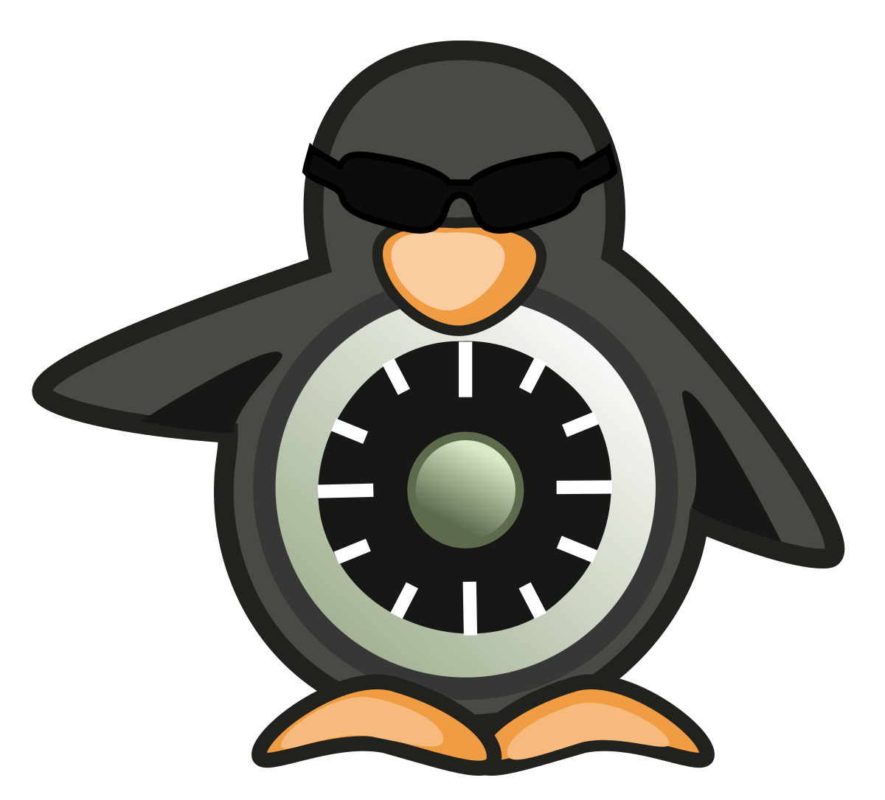

Infocomm Security

Provides students with an understanding of Infocomm security concepts and issues. Students will be able to identify the risks, threats and the vulnerabilities of the Internet and learn how to defend against security breaches by identifying effective counter measures to be taken against identified vulnerabilities. Students will also learn about ethical and responsibility issues through case studies of security breaches.
Modules taught in DISM
Network Fundamentals
Equips students with the fundamental concepts and skills in data networking, both wired and wireless. Students will learn basic network devices, functions, standards, and protocols and will acquire basic networking skills like designing and setting up a local area network.
Linux Administration and Security
Teaches students on the use of various Linux commands / system tools for user management, security administration, software installation, network administration and configuration of services. Students will also learn how to secure the Linux operating system.
Digital Forensics and Investigation

Equips students with the fundamental concepts and techniques of computer and mobile forensics. Students will learn to acquire, analyse and present both computer and mobile data as evidence. This module will cover tools and techniques of computer and mobile forensics, data recovery, imaging and storage of electronic evidence.
Ethical Hacking and Defences
Provides students with a foundation on network protocols, network security, secure coding and penetration testing to protect computer resources. Students are taught offensive and defensive skills for the organisation’s wired and wireless networks in order to protect important assets against hackers.
Malware Reverse Engineering

Equips students with the basic knowledge of malware analysis to reverse-engineer the malware using practical tools and techniques. The three phases of behavioral, code and memory analysis of malware will be taught. Students will learn how to explore and understand the key characteristics of malware and the techniques of reverse-engineering compiled Windows executables and browser-based malware.